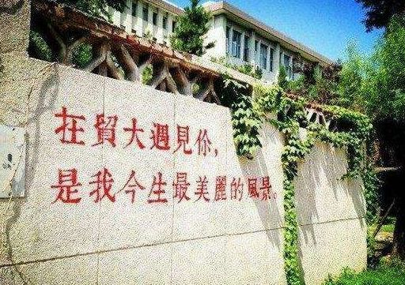

收录于合集
一、论坛 时间
2018年4月21日9:00—17:10
二、论坛地址
对外经济贸易大学行政楼222会议室（诚信楼东侧）
三、会务组联系人
熊李力、刘利琼
论坛日程
9:00-9:20
会议致辞 ： 对外经济贸易大学党委书记蒋庆哲教授
合影
**
**
第一单元 构建新型国际关系：思想内涵（上）
主持人 ： 戴长征（对外经济贸易大学国际关系学院院长、教授）
9:20-9:35
发言人 ： 蔡拓（中国政法大学全球化与全球问题研究所所长、教授）
题目 ： **** 理性与非理性的抉择：当前国际关系的思考
9:35-9:50
发言人 ： 刘建飞（中共中央党校国际战略研究院执行院长、教授）
题目 ： 新型国际关系的基本特征
9:50-10:05
发言人 ： 刘雪莲（吉林大学东北亚地缘政治经济研究所所长、教授）
题目 ： **** 国家理性调整与新型国际关系构建
10:05-10:20
发言人 ： 方长平（中国人民大学国际关系学院副院长、教授）
题目 ： 超越西方国际关系理论，构建新型国际关系
10:20-10:35
发言人 ： 陈志瑞（外交学院教授、《外交评论》执行主编）
题目 ： **** 地方性知识与中国周边外交
10:35-10:50
自由讨论
第二单元 构建新型国际关系：思想内涵（下）
主持人：李向阳（中国社会科学院亚太与全球战略研究院院长、研究员）
10:50-11:05
发言人：陈琪（清华大学中美关系研究中心主任、教授）
题目： 新型国际关系的规范维度
11:05-11:20
发言人 ： 吴志成（南开大学全球问题研究所所长、教授）
题目 ： **** 新型国际关系与中国特色大国外交
11:20-11:35
发言人 ： 蒲俜（中国人民大学国际关系学院教授）
题目 ： 新型国际关系“新”在哪里
11:35-11:50
发言人 ： 刘丰（南开大学周恩来政府管理学院副院长、教授）
题目 ： **** 管控中美战略竞争
11:50-12:05
发言人 ： 檀有志（对外经济贸易大学国际关系学院教授）
题目 ： **** 构建新型国际关系的规则意识浅析
12:05-12:20
自由讨论
第三单元 构建新型国际关系：实现路径（上）
主持人 ： 张宇燕（中国社会科学院世界经济与政治研究所所长、研究员）
14:00-14:15
发言人 ： 李向阳（中国社会科学院亚太与全球战略研究院院长、研究员）
题目 ： 推进“一带一路”的机制化建设
14:15-14:30
发言人 ： 周琪（清华大学国家战略研究院执行院长、中国社会科学院美国研究所研究员）
题目 ： 特朗普的贸易战与对华政策调整
14:30-14:45
发言人 ： 魏玲（外交学院中国外交理论研究中心主任、教授）
题目 ： 构建新型国际关系与“一带一路”合作实践
14:45-15:00
发言人 ： 孙学峰（清华大学国际关系研究院常务副院长、教授）
题目 ： 中美战略竞争时代的中国安全战略
15:00-15:15
发言人 ： 董青岭（对外经济贸易大学国际关系学院教授）
题目 ： 大数据研究与新型国际关系
15:15-15:30
自由讨论
茶歇
第四单元 构建新型国际关系：实现路径（下）
主持人 ： 蔡拓（中国政法大学全球化与全球问题研究所所长、教授）
15:30-15:45
发言人 ： 张宇燕（中国社会科学院世界经济与政治研究所所长、研究员）
题目 ： **** 新型国际关系的实现路径
15:45-16:00
发言人 ： 王正毅（北京大学国际政治经济学系主任、长江学者特聘教授）
题目 ： 东盟五十年：走出边缘地带发展的困境了吗？
16:00-16:15
发言人 ： 林利民（国际关系学院教授）
题目 ： 朝鲜半岛局势及其对中美关系的影响
16:15-16:30
发言人 ： 唐永胜（国防大学国家安全学院副院长、教授）
题目 ： 有效应对贸易摩擦积极拓展战略空间
16:30-16:45
发言人 ： 熊李力（对外经济贸易大学国际关系学院教授）
题目 ： 新型国际关系的国际制度路径
16:45-17:00
自由讨论
17:00-17:10
会议总结
与 会 嘉 宾 名 单
（按姓氏汉语拼音顺序排列）
蔡 拓 中国政法大学全球化与全球问题研究所所长、教授
陈 琪 清华大学中美关系研究中心主任、教授
陈志瑞 外交学院教授、《外交评论》执行主编
方长平 中国人民大学国际关系学院副院长、教授
李向阳 中国社会科学院亚太与全球战略研究院院长、研究员
林利民 国际关系学院教授
刘 丰 南开大学周恩来政府管理学院副院长、教授
刘建飞 中共中央党校国际战略研究院执行院长、教授
刘雪莲 吉林大学东北亚地缘政治经济研究所所长、教授
蒲 俜 中国人民大学国际关系学院教授
孙学峰 清华大学国际关系研究院常务副院长、教授
唐永胜 国防大学国家安全学院副院长、教授
王正毅 北京大学国际政治经济学系主任、长江学者特聘教授
魏 玲 外交学院中国外交理论研究中心主任、教授
吴志成 南开大学全球问题研究所所长、教授
张宇燕 中国社会科学院世界经济与政治研究所所长、研究员
周 琪 清华大学国家战略研究院执行院长、中国社会科学院美国研究所研究员
蒋正翔 光明网理论部副主任
刘蔚然 《教学与研究》编审
毛 莉 《中国社会科学报》记者
王 琳 中国网评论部编辑
蒋庆哲 对外经济贸易大学党委书记、教授
戴长征 对外经济贸易大学国际关系学院院长、教授
巩喜云 对外经济贸易大学国际关系学院分党委书记、副教授
熊光清 对外经济贸易大学国际关系学院副院长、教授
李航敏 对外经济贸易大学国际关系学院分党委副书记
赵鸿燕 对外经济贸易大学国际关系学院教授
熊李力 对外经济贸易大学国际关系学院教授
檀有志 对外经济贸易大学国际关系学院教授
董青岭 对外经济贸易大学国际关系学院教授
王 波 对外经济贸易大学国际关系学院副教授
王海滨 对外经济贸易大学国际关系学院副教授
张孝芳 对外经济贸易大学国际关系学院副教授
霍伟岸 对外经济贸易大学国际关系学院副教授
乔 旋 对外经济贸易大学国际关系学院副教授
石贤泽 对外经济贸易大学国际关系学院副教授
李志永 对外经济贸易大学国际关系学院副教授
冯 峰 对外经济贸易大学国际关系学院副教授
王宏禹 对外经济贸易大学国际关系学院副教授
张萌萌 对外经济贸易大学国际关系学院副教授
王晓梅 对外经济贸易大学国际关系学院副教授
叶 静 对外经济贸易大学国际关系学院副教授
李 扬 对外经济贸易大学国际关系学院副教授
张 汉 对外经济贸易大学国际关系学院副教授
余艳红 对外经济贸易大学国际关系学院副教授
魏范强 对外经济贸易大学国际关系学院讲师
刘娟凤 对外经济贸易大学国际关系学院讲师
杜 旸 对外经济贸易大学国际关系学院讲师
杨吉平 对外经济贸易大学国际关系学院讲师
邱昌情 对外经济贸易大学国际关系学院讲师
赵 洋 对外经济贸易大学国际关系学院讲师
刘若楠 对外经济贸易大学国际关系学院讲师
乔 亮 对外经济贸易大学国际关系学院讲师
庄吟茜 对外经济贸易大学国际关系学院讲师

编辑：里仝
学人约稿与入群邀请